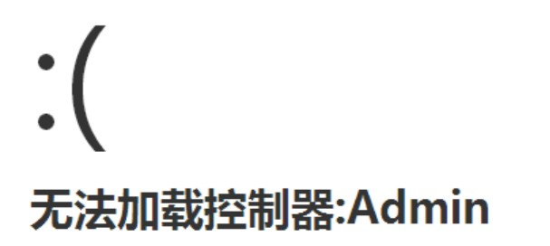

入口绑定是指在应用的入口文件中绑定某个模块，甚至还可以绑定某个控制器和操作，用来简化URL地址的访问。
例如，我们定义了一个入口文件admin.php，希望可以直接访问Admin模块，那么我们就可以在admin.php中进行模块绑定，定义如下：
// 绑定访问Admin模块
define('BIND_MODULE','Admin');
// 定义应用目录
define('APP_PATH','./Application/');
require './ThinkPHP/ThinkPHP.php';
在3.2.0版本中常量定义需要改成：
$_GET['m'] = 'Admin';
在入口文件中绑定模块后，访问的URL地址中就不需要传入模块名称了。
假设我们要访问Admin模块的Index控制器的test操作方法，访问地址如下： http://serverName/admin.php/Index/test/var/name 如果访问 http://serverName/admin.php/Admin/Index/test/var/name 就会出现下面的错误提示：

和绑定模块一样，我们还可以绑定控制器（一般是和模块绑定结合使用）。 例如：
// 绑定访问Admin模块
define('BIND_MODULE','Admin');
// 绑定访问Index控制器
define('BIND_CONTROLLER','Index');
// 定义应用目录
define('APP_PATH','./Application/');
require './ThinkPHP/ThinkPHP.php';
我们前面的URL访问就可以换成： http://serverName/admin.php/test/var/name
在3.2.0版本中常量定义需要改成：
$_GET['m'] = 'Admin';
$_GET['c'] = 'Index';
原则上，我们还可以在入口文件中绑定操作（虽然这种情况实际使用中不多见）。
// 绑定访问Admin模块
define('BIND_MODULE','Admin');
// 绑定访问Index控制器
define('BIND_CONTROLLER','Index');
// 绑定访问test操作
define('BIND_ACTION','test');
// 定义应用目录
define('APP_PATH','./Application/');
require './ThinkPHP/ThinkPHP.php';
我们前面的URL访问就可以换成： http://serverName/admin.php/var/name
3.2.0版本不支持操作绑定。